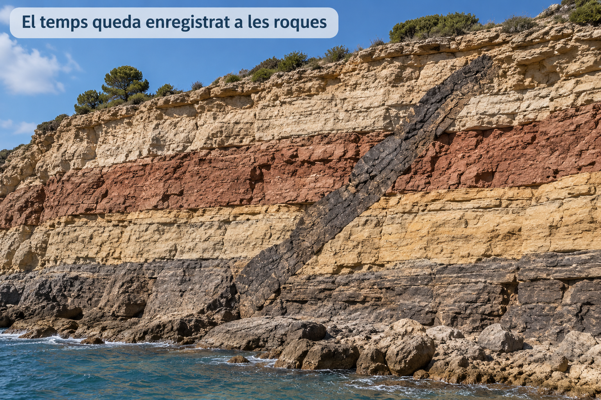
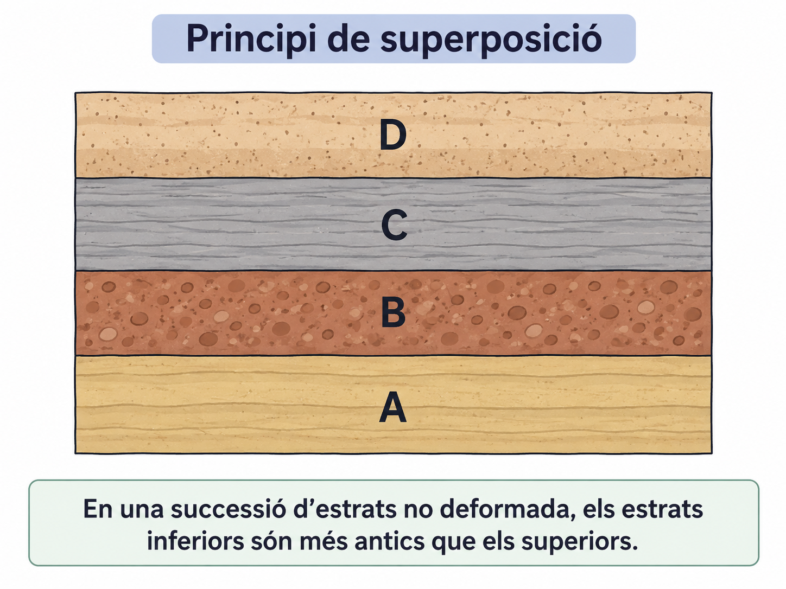
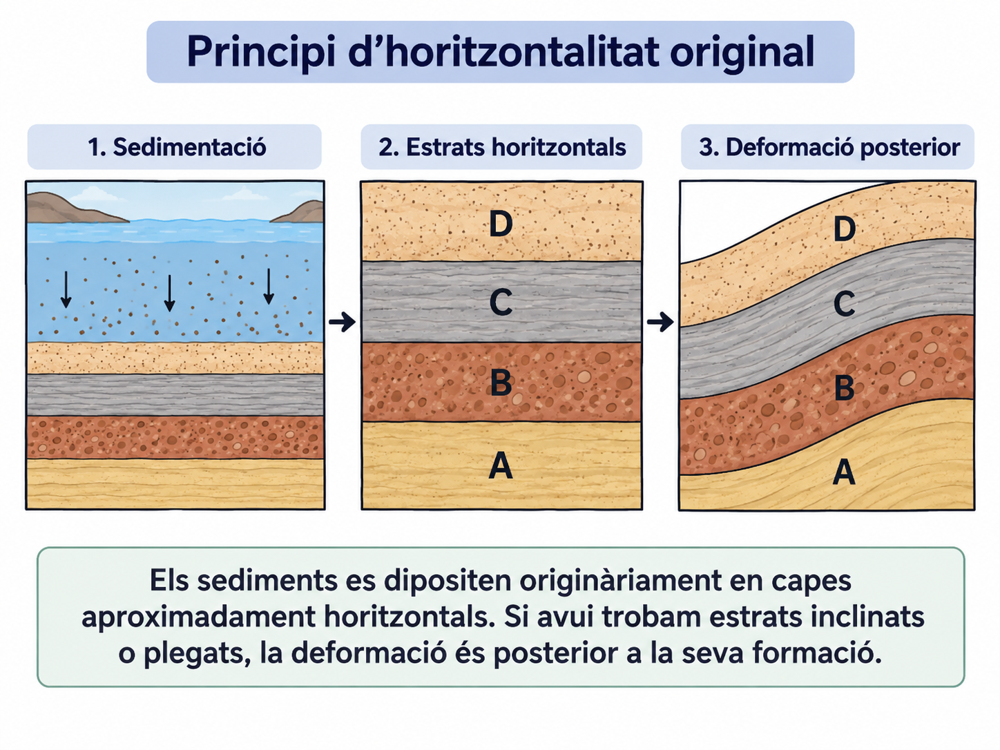
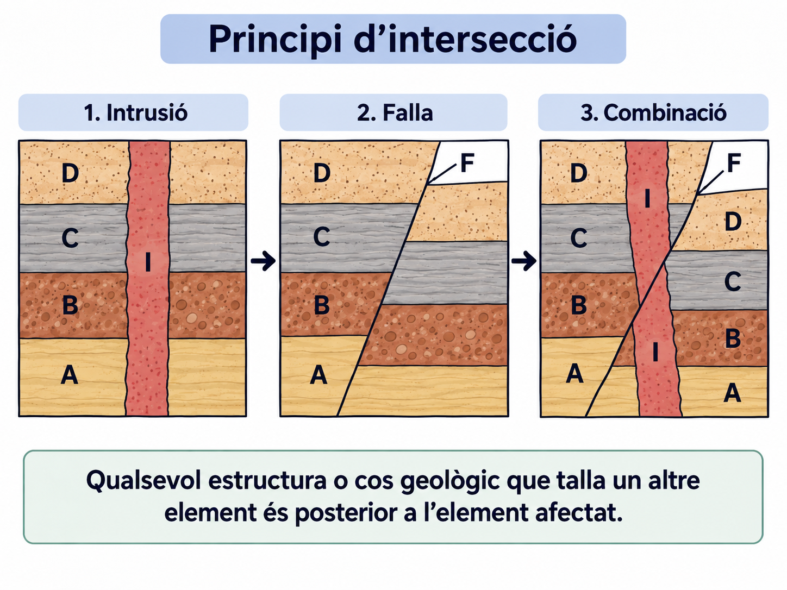
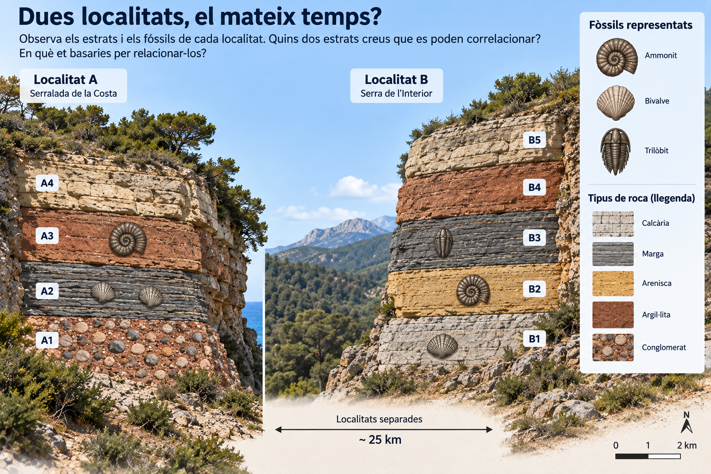

GEO-04 · Llegim el temps a les roques¶
Com podem saber què va passar abans i què va passar després?¶
1 · El repte: les roques tenen memòria¶

Observa l'aflorament abans de continuar.
Podem establir l'ordre d'alguns esdeveniments geològics encara que no en sapiguem l'edat en anys?
Datació relativa significa establir l'ordre dels materials i dels esdeveniments: què és més antic, què és més modern i què va passar abans o després.
La datació relativa no ens dona necessàriament una edat en anys.
2 · Apilar el temps¶

Mira els quatre estrats A, B, C i D.
Quin estrat s'havia de formar primer?
Principi de superposició¶
En una successió d'estrats que conserva la seva disposició original, els estrats inferiors són més antics que els situats damunt seu.
Ordena mentalment A, B, C i D del més antic al més modern abans de continuar.
3 · Si ara estan inclinats...¶

La figura mostra una seqüència: sedimentació, estrats horitzontals i deformació posterior.
Què va passar primer?
Principi d'horitzontalitat original¶
Els sediments es dipositen originàriament en capes aproximadament horitzontals. Si avui trobam estrats inclinats o plegats, la deformació és posterior a la seva formació.
Veure estrats deformats ens permet deduir un esdeveniment posterior a la sedimentació.
4 · Qui talla a qui?¶

Observa els tres casos: una intrusió, una falla i una combinació de totes dues.
En el primer cas, què és posterior?
Principi d'intersecció¶
Una estructura o cos geològic que talla un altre element és posterior a l'element tallat.
En el cas 3, quina seqüència és compatible amb la figura?
5 · Dues localitats, el mateix temps?¶

Els dos afloraments són de localitats diferents i no hi ha continuïtat lateral entre ells.
Quins dos estrats creus que es poden correlacionar? En quina evidència et bases?
Abans de comprovar la idea, fixa't que els estrats correlacionables no tenen per què ocupar la mateixa posició dins cada successió ni estar formats per la mateixa roca.
Si dos estrats de localitats diferents contenen el mateix fòssil guia, però tenen litologies diferents, poden correspondre al mateix interval de temps?
Principi de successió faunística¶
Els organismes que han viscut a la Terra han anat canviant al llarg del temps. Per això, determinats fòssils característics ens permeten ordenar i correlacionar estrats de localitats diferents.
Fòssil guia: fòssil especialment útil per correlacionar estrats perquè correspon a un interval temporal relativament curt i té una distribució geogràfica prou àmplia.
6 · El present ens ajuda a llegir el passat¶
Imagina que avui observes un torrent que transporta fragments de roca. Durant el transport, els fragments xoquen, es desgasten i poden acabar més arrodonits.
Milers o milions d'anys després, un geòleg troba una roca formada per còdols arrodonits cimentats.
Quina interpretació és més raonable?
Principi d'actualisme¶
Els processos geològics que observam avui ens ajuden a interpretar els materials i les estructures formats en el passat.
Això no significa que tots els processos hagin actuat sempre amb la mateixa intensitat ni que les condicions de la Terra no hagin canviat.
7 · Cinc eines per ordenar el passat¶
| Si observes... | Principi que et pot ajudar |
|---|---|
| Estrats situats uns damunt els altres | Superposició |
| Estrats inclinats o plegats | Horitzontalitat original |
| Una estructura que talla una altra | Intersecció |
| Fòssils característics en estrats de llocs diferents | Successió faunística |
| Empremtes d'un procés semblant a un procés actual | Actualisme |
No es tracta de memoritzar cinc definicions: es tracta de saber quin principi et permet justificar una relació temporal.
8 · Consolida: llegim un tall geològic¶
Ara aplica els principis que has treballat en una fitxa de consolidació. Hi practicaràs la lectura d'un tall, la datació relativa, l'ús de fòssils i la reconstrucció d'una història geològica abans de passar a UD01-A7.